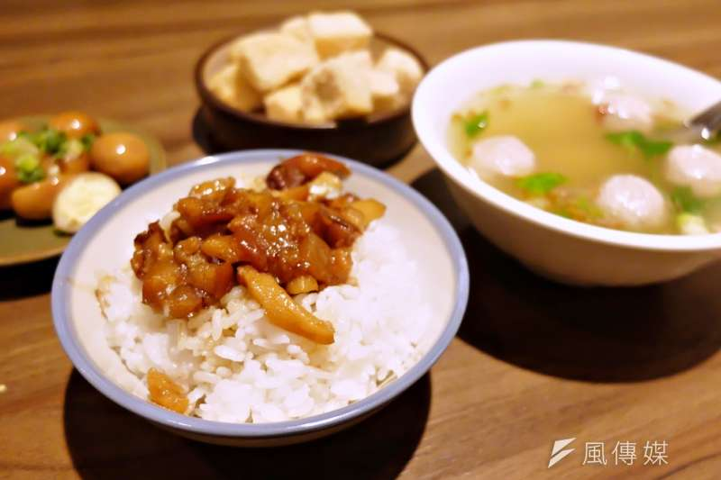

宜好吃」背後，是多少小吃店不為人知的辛勞？在台北南萬華老社區經營30年的家香味食堂，
每一碗滷肉飯都是熬煮4小時才能上桌、吃一口即爆發豐厚油潤香氣的美味，
深受在地好評也連續3年入選「台灣滷肉飯節」
老闆夫婦30年不變的工夫與堅持是二代接班人米蘭達（本名周孟儒）的驕傲，
然而米蘭達也有無力的時候，就是這樣一碗只要30元的滷肉飯，竟也會被新客嫌「太貴」。
「台灣人對小吃都是這樣的既定概念，就是要『便宜又好吃』，
但大家忘了一件事：老一輩在經營，真的沒有把自己的薪水算進去……」
米蘭達嘆。每一碗滷肉飯背後都是4小時以上的工夫，
而小吃店老闆的工時往往是一天14小時以上，幾乎是用生命餵飽客人。
台灣人願意為了一碗300元的濃厚高湯日本拉麵瘋狂排隊，面對一碗30元的滷肉飯卻時常嚴苛，
似乎「小吃」就是上不了檯面，然而台灣小吃的工夫真不如異國料理嗎？
米蘭達娓娓道出的小吃店日常，是老店真心端出真材實料美食的誠意，
也是台灣最值得驕傲的、每一位「職人」的畢生堅持。
